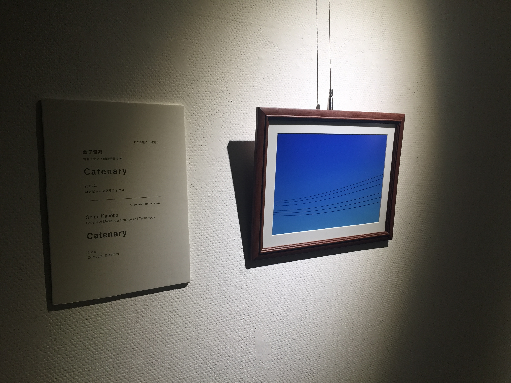
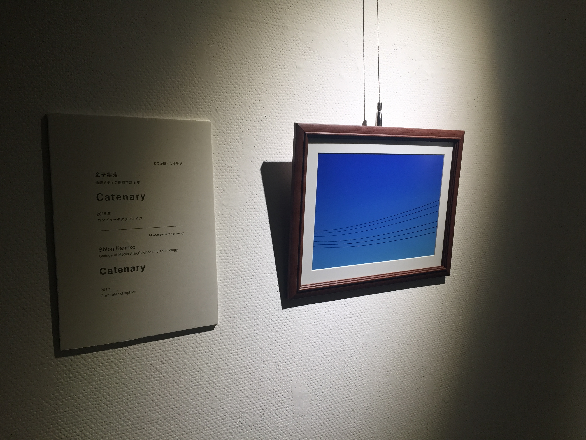
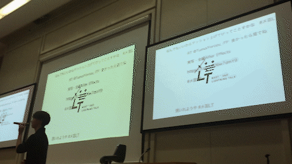

WORKS
Video

Art
ひとりごとのカタチ/ 集合体について
キャプション
昨日のことすらもはや原型をとどめることはなく，ましてや1年も前のことなど手にとって見ることは叶わない。ぼんやりとした印象として眺めることしかできない。過去とはそういうものなのだと思う。
この作品について
筑波大学 情報メディア創成学類有志による展示会mAstivalにて展示した作品。自身の1年分のTwitterの投稿を抽出し、ある規則に基づき生成した幾何学図形を時系列順に並べた。ひとつひとつの記憶は朧げな印象でしかなく、またそれらは混じり合うことで別の印象として蓄積される。


どこか遠くの場所で
旅先で撮った写真や描いた絵、買ったもの、拾ったもの... 私たちが持ち帰ってきた"お土産"です。
筑波大学 情報メディア創成学類の2年生の有志による展示会。
「旅先で手に入れたおみやげ」というテーマで制作。CG，油絵，インスタレーション，メディアアートなど様々な分野の7つの作品を展示した。
企画：小貫智弥
展示：安斎彩季，稲田和巳，小貫智弥，加藤優一，金子紫苑，種村優佑，松浦一輝
サウンド：金子紫苑
協力：岡本太久斗,筑波大学アートギャラリーT+
場所：筑波大学アートギャラリーT+
日時：2018年10月1日(月)〜10月5日(金)
リンク：http://www.geijutsu.tsukuba.ac.jp/t-tasu/info/10554

 



Application
COLOR SELECTION
https://color-selection.herokuapp.comカラーデザインの支援ツール。色相を選び、明度と彩度を調整することで統一感のあるカラーデザインが可能となる。

ごっっはにゃさん
https://tapiome.herokuapp.com筑波大学情報学群の講義 enPitにて制作したアプリケーション。
つくば市内の飲食店の情報をまとめたwebサービス。ユーザーの投稿によって休業情報を収集することができる。
制作：新貝力哉 / 田之頭吾音 / 小貫智弥 / 末吉里帆 / 安斎彩季 / 古川栞


ツイート共有システム
筑波大学において開催された, 情報メディア創成学類と芸術専門学群による合同プレゼンテーション企画「メ芸LT」にて使用したTwitter連携システムである。
"#メ芸LT"というハッシュタグを添えてプレゼンに対する意見や感想を呟くとリアルタイムでそのTweetが映し出されるというものである。観客の参加感を増幅させることを目的として導入した。
